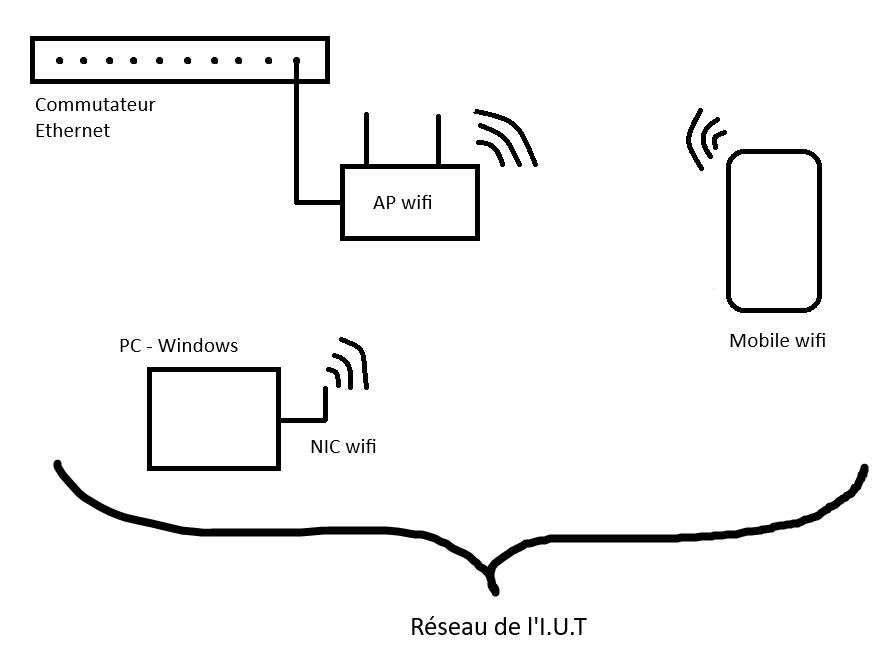
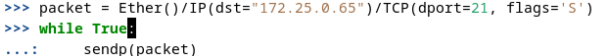
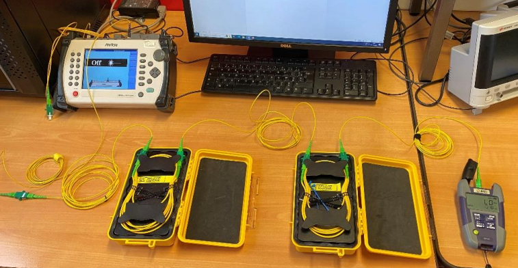
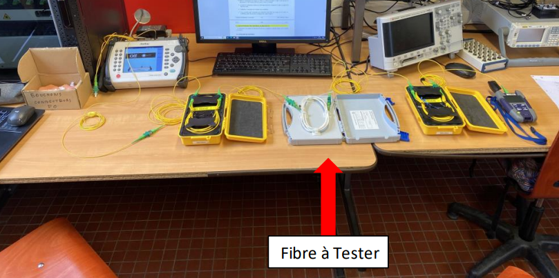
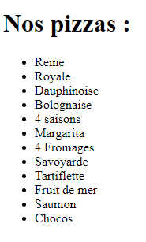
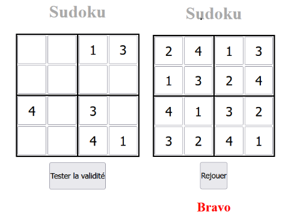

Projets de la formation
Réseaux
Configuration d'un point d'accès wifi sur le réseau informatique de l'I.U.T.
- Contexte : Travail pratique réalisé en binôme.
- Objectifs :
- Installer et configurer le point d’accès IEEE-802.11.
- Mettre en place une sécurité d’accès au point d'accès.
- Missions :
- Réinitialisation du point d'accès wifi.
- Branchement de cet appareil sur un ordinateur via un câble Ethernet.
- Changement de l'adresse IP de la deuxième carte réseau de l'ordinateur pour qu'elle soit dans le même réseau que le point d'accès wifi.
- Accès à l'interface de configuration de l'appareil en tapant son adresse IP dans un navigateur de recherche.
- Configuration de son nom ainsi que du mot de passe wifi.
- Attribution de l'adresse IP du point d'accès avec le protocole DHCP, pour qu'il soit dans le réseau que l'on souhaite (ici celui de l'I.U.T).
- Activation du NAT.
- Branchement du point d'accès sur le Réseau de l'I.U.T.
Technologie de l'internet.
- Contexte : Travail pratique réalisé en binôme pendant 3 heures.
- Objectifs :
- Observer les connexions TCP.
- Créer un paquet TCP de demande de connexion.
- Réaliser un outil de scan de ports.
- Missions :
- Installation d'un serveur FTP vsftpd sur la première machine.
- Création d'un compte utilisateur.
- Installation de Filezilla sur la deuxième machine.
- Établissement d'une connexion FTP grâce au compte utilisateur créé précédemment.
- Observation de cette connexion avec Wireshark.
- Observation de la sécurité du serveur FTP notamment avec un mot de passe en clair.
- Observation avec Wireshark de la déconnexion du serveur FTP.
- Installation de Scapy.
- Création d'un paquet de demande de connexion FTP.
- Observation de ce paquet sur le réseau.
- Création d'un script Scapy afin de voir quels sont les ports ouverts.
- Création d'un script Scapy qui permet d'attaquer le serveur FTP.
Script pour scanner les ports :

Attaque SYN Flood :
Projet intégratif.
- Contexte : Travail pratique réalisé par groupe de 5.
- Objectifs :
- Concevoir et mettre en place une infrastructure correspondant au réseau d’une petite entreprise.
- Missions :
- Description précise et technique de l’installation, des services réseaux utilisés.
- Ordonnancement et répartition des tâches.
- Communication des différents appareils entre eux.
- Mise en œuvre des services réseaux et utilisateurs.
- Mise en œuvre des attaques et démonstration des contre-mesures.
- Rédaction d'un site web contenant les missions réalisées.
Télécommunications
Réaliser un montage fonctionnel avec de la fibre optique (1310 nm).
- Contexte : Travail pratique réalisé en binôme pendant 3 heures.
- Objectifs :
- Comprendre les mesures en photométrie et en réflectométrie sur une fibre optique.
- Savoir faire des calculs de puissance et d’atténuation.
- Missions :
- Allumer la source lumineuse, ici un réflectomètre.
- Sélection du mode de mesure "source lumineuse".
- Changement de la longueur d'onde à 1310 nm.
- Branchement de la sortie du réflectomètre à la bobine d'amorce via une jarretière.
- Branchement de la bobine d'amorce à la bobine de fin.
- Branchement de la bobine de fin à un photomètre.
- Prise de mesures notamment avec une fibre à tester. 
Mesurer et caractériser un signal.

- Contexte : Travail pratique réalisé individuellement.
- Objectifs :
- Réaliser des simulations numériques avec MATLAB.
- Missions :
- Initiation au langage de programmation MATLAB.
- Implémentation de différentes méthodes pour calculer les intégrales comme la méthode des rectangles.
- Étude d'un signal temporel à l'aide de MATLAB.
- Étude d'un canal radio à l'aide de MATLAB.
Programmation Web
Apprendre les bases de la programmation web.
- Contexte : Travail pratique réalisé individuellement.
- Objectifs :
- Comprendre l'utilisation des balises en HTML.
- Savoir se servir de ces balises pour écrire le code CSS.
- Missions :
- Codage en HTML avec des balises.
- Création de listes à l'aide des balises "ul" et "li". 
- Codage en CSS.
- Ajout d'un style pour le texte ainsi que les images.
Sudoku en PHP.
- Contexte : Travail pratique réalisé individuellement.
- Objectifs :
- Apprendre les bases du langage PHP.
- Missions :
- Création de plusieurs fichiers pour organiser le projet.
- Création de fonctions pour générer une grille valide.
- Affichage de la totalité du contenu de la grille dans un tableau html via une fonction.
- Modification d'une ancienne fonction pour avoir des trous dans la grille.
- Récupération du contenu de la grille et vérification de sa validité avant d'en informer l'utilisateur.